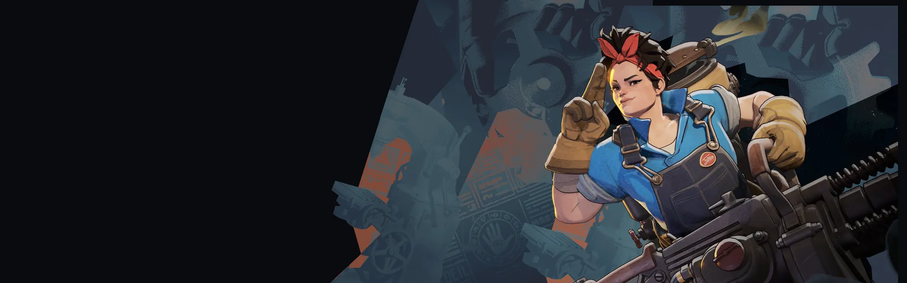

Minitorre Mini Turret Instala uma torreta de curta duração que atira em inimigos e causa dano espiritual contínuo.
Espectro Medicinal Medicinal Specter Invoca um espírito que cura e restaura stamina de aliados próximos. Parede Espectral Spectral Wall Cria uma parede no terreno que fere e retarda inimigos próximos, e pode ser detonada antes do tempo.
Barragem Pesada Heavy Barrage Dispara foguetes teleguiados numa área alvo por um tempo, retardando McGinnis enquanto dura.Domínio de área com torres e barreiras.
História
Maggie McGinnis sempre teve talento para construir coisas. Aos 4 anos ela usava Lincoln Logs para recriar maravilhas arquitetônicas. Aos 10 anos, ela construiu e renovou uma luminária personalizada para o aniversário de seus pais. Aos 15 anos ela projetou uma máquina que refinava as almas dos mortos... essa última chamou um pouco mais de atenção do que o Lincoln Logs.
Agora chefe do departamento de P&D Militar da Fairfax Industries, McGinnis passa seu tempo na oficina mecânica, não em um laboratório. Ela não está interessada em teoria, para ela a ciência é mágica que você pode tocar.
História oficial do jogo, traduzida automaticamente para o português.
Números reais
Habilidades
Instala uma torreta de curta duração que atira em inimigos e causa dano espiritual contínuo.
Invoca um espírito que cura e restaura stamina de aliados próximos.
Cria uma parede no terreno que fere e retarda inimigos próximos, e pode ser detonada antes do tempo.
Dispara foguetes teleguiados numa área alvo por um tempo, retardando McGinnis enquanto dura.
Builds mais usadas
22.165 partidas registradas com esta build.
Rodadas Monstruosas (800) · Vigor Extra (800) · Regeneração Mística (800) · Taxa Extra (800) · Supressor (1.600) · Regeneração Radiante (3.200) · Emblema do Encantador (1.600) · Surto Arcano (1.600) · Expansão Mística (800) · Resfriamento da compressão (1.600)
9.981 partidas registradas com esta build.
Ovo de Ganso Dourado (800) · Refutação (800) · Taxa Extra (800) · Colecionador de Troféus (1.600) · Botas de corrida (800) · Supressor (1.600) · Expansão Mística (800) · Healbane (1.600) · Vulnerabilidade Mística (1.600) · Recarga rápida (3.200)
7.877 partidas registradas com esta build.
Rodadas Monstruosas (800) · Taxa Extra (800) · Expansão Mística (800) · Resfriamento da compressão (1.600) · Vulnerabilidade Mística (1.600) · Emblema do Encantador (1.600) · Impulsionador de cura (1.600) · Healbane (1.600) · Aura Heroica (3.200) · Recarregando corrida (1.600)
Confrontos reais
 Shiv — 54.8% de vitória
Shiv — 54.8% de vitória Mirage — 54.5% de vitória
Mirage — 54.5% de vitória Pocket — 54.3% de vitória
Pocket — 54.3% de vitória Sinclair — 54.3% de vitória
Sinclair — 54.3% de vitória Viscous — 53.6% de vitória
Viscous — 53.6% de vitória Silver — 53.0% de vitória
Silver — 53.0% de vitória
 Rat King — 40.6% de vitória
Rat King — 40.6% de vitória Paige — 41.4% de vitória
Paige — 41.4% de vitória Seven — 41.5% de vitória
Seven — 41.5% de vitória Victor — 43.1% de vitória
Victor — 43.1% de vitória Graves — 43.8% de vitória
Graves — 43.8% de vitória Haze — 44.7% de vitória
Haze — 44.7% de vitória
Ver a página de counters do McGinnis
O que upar primeiro
Nível por nível, na ordem que os jogadores mais usam em partidas de verdade. A porcentagem mostra quantos escolheram aquela habilidade naquele nível.
Melhores duplas
Heróis que mais ganham jogando junto com ele, em partidas reais (pelo menos 1.500 partidas juntos).
- Rat King55,8%
- Paige55,1%
- Seven52,9%
 Dynamo52,5%
Dynamo52,5% Ivy52,0%
Ivy52,0%
 Warden42,4%
Warden42,4%- Shiv42,5%
- Silver43,0%
Rota (lane)
Na rota, cada lado joga em dupla. Estes números são de confrontos reais: a diferença de almas é medida com o jogo já começado, então almas no verde significa que ele costuma estar na frente.
- Rat King — 34,9% de vitória −2.002 almas (587 partidas)
- Graves — 37,7% de vitória −1.577 almas (921 partidas)
 Infernus — 40,4% de vitória −1.414 almas (230 partidas)
Infernus — 40,4% de vitória −1.414 almas (230 partidas)- Seven — 41,7% de vitória −1.272 almas (235 partidas)
- Paige — 43,9% de vitória −1.588 almas (478 partidas)
Histórico de win rate
21/09: 51.5% → 09/11: 52.4% → 28/12: 52.7% → 15/02: 49.6% → 05/04: 51.5% → 24/05: 55.7% → 12/07: 53.0% → 30/08: 49.7% → 18/10: 48.5%